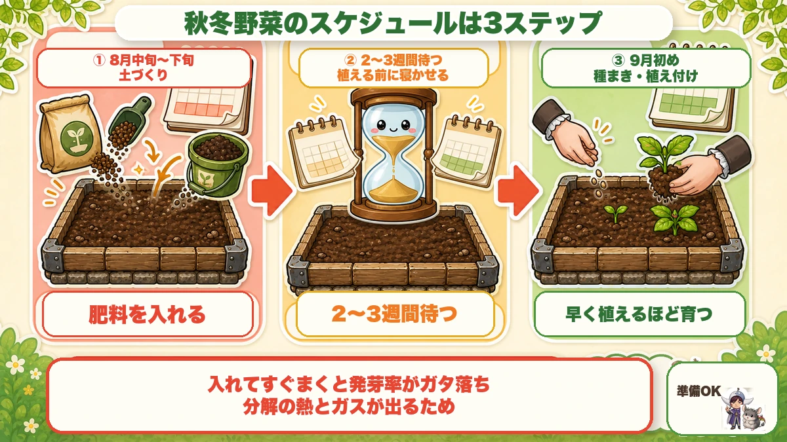
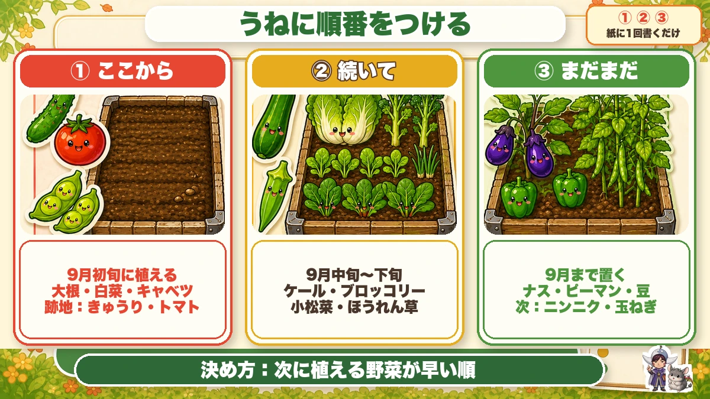
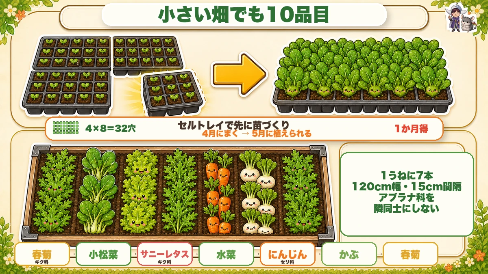
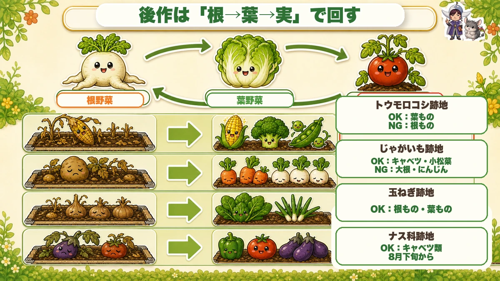

秋冬野菜の作付けプランの立て方｜畝の順番・小さな畑で多品目・後作の相性・連作障害
🗨️「どのうねに何を植えたらいいのか、毎年ノリで決めてる」
🗨️「畑が狭いから、そんなに種類は作れない」
🗨️「連作障害が怖くて、結局いつも同じ配置になる」
どうも、8150（えいこう）です🌱 家庭菜園歴8年、理科の教員免許を持っていて、有機・無農薬で野菜を育てています。
前回は「夏野菜の店じまい」で、抜く順番と土のリセットの話をしました。今回はその続き、何をどこに植えるかを1枚の紙にまとめる話です。
先に、いちばん大事なことを言っておきますね。
作付けプランって「何を植えるか」の話じゃなくて、「どのうねから手をつけるか」の話なんです。
ここが決まっていないと、行き当たりばったりになってしまい、『どうしよう！間に合わない😢』となってしまいます。
この記事では、紙1枚でできるプランの立て方と、小さい畑でも10品目つくる方法をお話しします。
※以下の時期は中間地（関東〜関西の平野部）が目安。寒い地域は少し遅らせ、暖かい地域は早めに。
📖 この記事の目次
この記事で分かること
- 秋冬野菜は、植えつけの時期が厳しい野菜です。遅れると育たず、早すぎると暑さでやられます。
- 計画は、植えつけの日から逆算して立てます。8月の初めに計画、8月中旬から下旬に土づくり、2〜3週間あけて9月の初めに植えつけ、が基本の流れです。
- 畝が何本かあるなら、「ここから・続いて・まだまだ」と順番をつけて作業すると、迷わずに進められます。
- 小さな畑でも、セルトレイで先に苗を作る、1つの畝に何種類も筋まきする、時期をずらしてリレーで育てる、の3つの方法で、たくさんの品目を育てられます。
- 前に何を植えていたかで、次に向く野菜・向かない野菜があります。
- 同じなかま（科）の野菜を続けて植えると、育ちが悪くなる「連作障害」が起きやすくなります。
夏野菜がまだとれている8月。「秋冬野菜も育てたいけど、どこに何を植えればいいんだろう」と、畑を前に悩んだことはありませんか。
夏野菜を片づけるタイミング、土づくりの時期、植えつけの時期。さらに、前に何を植えていたかによって、次に植えていい野菜とよくない野菜がある。考えることが多くて、つい後回しにしてしまいますよね。
安心してください。計画の立て方には、ちゃんとした型があります。この記事では、スケジュールの骨格から、畝の順番のつけ方、小さな畑でたくさんの品目を育てるコツ、後作の相性まで、順番に書いていきます。

早見：秋冬の作付けプランの基本（ひと目で分かる目安）
スケジュールの骨格
- 8月初め：秋冬野菜の作付け計画を立てる
- 8月中旬から下旬：土づくり
- 土づくりから2〜3週間あける
- 9月初め：種まき・植えつけ（9月中旬までには植え終える）
- 10月初め：いちご、スナップえんどう、玉ねぎなど、翌年まで畑を使う野菜の植えつけ
畝の順番
- 「ここから」：9月の初めに植える野菜の畝（大根、白菜、キャベツ、ブロッコリーなど）
- 「続いて」：9月の中旬から下旬に植える野菜の畝（葉物、にんにくなど）
- 「まだまだ」：夏野菜をもう少し残しておける畝（10月ごろに植える野菜の場所）
跡地ごとの後作の目安
- じゃがいものあと：キャベツ、小松菜、ブロッコリーなど
- 玉ねぎのあと：ほうれん草、大根、キャベツなど。ねぎやえんどうは避ける
- とうもろこしのあと：にんじんや大根などの根菜は避ける、という説明がある
- 枝豆のあと：白菜、にんじん、大根、レタスなど
覚えておきたいこと
- 根の野菜 → 葉の野菜 → 実の野菜、の順に回すのが一つの目安
- 見た目が違っても、同じ科のことがある（ブロッコリー、白菜、キャベツ、大根はどれもアブラナ科）
秋冬野菜の科と植えつけ時期の一覧
計画を立てるときに便利なように、よく育てる秋冬野菜を、科ごとにまとめておきます。
- アブラナ科：大根、かぶ、白菜、キャベツ、ブロッコリー、カリフラワー、小松菜、水菜、チンゲン菜。多くは9月に種まき・植えつけ
- ヒユ科：ほうれん草。9月中旬から10月に種まき
- キク科：レタス、春菊。9月から10月
- セリ科：にんじん。7月下旬から8月中旬に種まき
- ヒガンバナ科：にんにく、玉ねぎ、らっきょう、ねぎ。にんにくは9月から10月、玉ねぎの苗は11月ごろ
- マメ科：スナップえんどう、そら豆。10月から11月
- バラ科：いちご。10月ごろ
秋冬野菜は、アブラナ科がとても多いのが分かりますね。半分以上がこのなかまです。だからこそ、並べ方の工夫が大切になります。同じ科ばかりにならないように、ほかの科の野菜もうまく組み合わせてください。
作業の手順
ここからは、作付けプランを立てて実行するまでの流れを、順番に書いていきます。
手順1：8月の初めに、計画を立てる
8月に入ったら、秋冬野菜の作付け計画を立てましょう。
まずは、紙に畑の図を描きます。畝ごとに、いま何が植わっているか、それがいつまでとれそうか、次に何を植えたいかを書きこんでいきます。
ここで大事なのが、前に植えていた野菜と、次に植える野菜の相性です。相性のよくない組み合わせにならないように、十分に計画を練ってください（後作の相性は、あとでくわしく書きます）。
手順2：植えつけの日から逆算する
秋冬野菜は、植えつけのタイミングがとても厳しい野菜です。
- 遅れると：寒くなるまでに十分に育たない。キャベツや白菜は玉が巻かず、ブロッコリーはつぼみが小さくなる
- 早すぎると：まだ残る暑さで、苗が傷んでしまう
ですから、9月の初めを狙って植えつけ、9月の中旬までには植え終えるのが目安になります。
植えつけの日が決まったら、そこから逆算します。土づくりから植えつけまで2〜3週間あけるとすると、土づくりは8月の中旬から下旬。そのためには、夏野菜をいつ片づけるか、も決まってきます。
手順3：夏野菜を残すか、片づけるかを決める
なす、ピーマン、トマトなどは、10月ごろまでとれることもあります。それを最後までとるか、秋冬野菜のために早めに片づけるか。ここは、育てている人の判断になります。
ただ、大根や白菜、キャベツなど、植えつけが遅れると育たない野菜を植える場所なら、夏野菜を多少犠牲にしてでも、早めに片づけたほうが、あとのためになる、という考え方もあります。
迷ったら、次に植える野菜が「遅れると困る野菜」かどうかで決めてください。
手順4：夏野菜を抜くときに、根を見る
夏野菜を抜いたら、ぜひ根のようすを見てください。
根に、こぶのようなふくらみがたくさんできていたら、ネコブセンチュウという、土の中の小さな虫が多く発生しているかもしれません。そこに大根やにんじんなどの根菜を植えると、根が被害を受けることがあります。
ただし、枝豆やいんげんなどの豆類の根についている丸い粒は、「根粒（こんりゅう）」といって、豆が育つのを助けてくれる菌のすみかです。これはセンチュウのこぶとは別のものなので、間違えないようにしてください。

手順5：畝に順番をつける
畝が何本かある畑なら、作業する順番を決めておくと、迷わずに進められます。
合言葉は、「ここから・続いて・まだまだ」です。
- 「ここから」の畝：9月の初めに植えたい野菜の場所。いちばん先に夏野菜を片づけて、土づくりを始める。大根、白菜、キャベツ、ブロッコリー、カリフラワーなど
- 「続いて」の畝：9月の中旬から下旬に植える野菜の場所。少しあとから土づくりをする。葉物、にんにくなど
- 「まだまだ」の畝：夏野菜をまだ残しておける場所。10月ごろに植える野菜（玉ねぎ、いちご、スナップえんどうなど）の場所にする
こうして畝ごとに順番をつけると、8月の暑い中でも、一度に全部を片づけなくてすみます。「ここから」の畝から作業を始めて、順番に進めていけばいいんです。
畝の番号に意味があるわけではなく、「次に何を植えるか」で順番が決まる、というのがポイントです。
計画の具体例
たとえば、畝が4本ある畑で、夏にトマト、なす、きゅうり、枝豆を育てていた場合、こんな計画が考えられます。
- 枝豆のあと（「ここから」）：8月に収穫が終わったら土づくり → 9月初めに白菜の苗を植える
- きゅうりのあと（「ここから」）：8月に片づけて土づくり → 9月初めに大根の種まき
- トマトのあと（「続いて」）：9月に片づけて土づくり → 9月下旬に小松菜やかぶ、レタスを筋まき
- なすのあと（「まだまだ」）：10月まで収穫を続ける → 10月下旬に片づけて、11月に玉ねぎの苗を植える
トマトとなすはナス科なので、そのあとにナス科の野菜は植えません。秋冬野菜はアブラナ科が多いので、アブラナ科の白菜と大根は、別々の畝に分けています。
これはあくまで一例です。自分の畑の夏野菜に合わせて、組み立ててみてください。
手順6：紙に書く
計画は、頭の中だけでなく、紙に書いておきましょう。
畝ごとに、こんな欄を作っておくと分かりやすいです。
- いま植わっている野菜と、収穫の見こみ
- 次に植える野菜と、植えつけの適期
- 土づくりをする日
書いてみると、「この畝は土づくりが間に合わない」「この畝は空く時期が早すぎる」といったことが、ひと目で分かります。
秋じゃがいもの場所選び
秋じゃがいもを育てるなら、場所選びには特に気をつけます。
- じゃがいもはナス科なので、トマト、なす、ピーマンを育てていた場所は避ける
- 水はけのよい場所を選ぶ（暑い時期に植えるので、土が湿りすぎていると種いもが腐りやすい）
夏野菜はナス科が多いので、秋じゃがいもの場所は、意外と限られてきます。きゅうりやとうもろこし、枝豆のあとなど、ナス科以外の跡地を探してください。
手順7：土づくりをして、2〜3週間待つ
夏野菜を片づけたら、たい肥や肥料を入れて耕します。そして、植えつけまでに2〜3週間くらいあけるのが基本です。
肥料やたい肥を入れた直後は、土の中で分解が始まって、ガスや熱が出たり、土の状態が落ちつかなかったりします。そのタイミングで植えると、根を傷めてしまうことがあるからです。
ただし、すぐに植えたい場合の方法もあります（あとで書きます）。

手順8：植えたあとも、放っておかない
苗を植えたり、種をまいたりしたら終わり、ではありません。植えたあとの数週間の世話が、秋冬野菜の育ちを大きく左右します。
- 水やり：植えたばかりの苗は、根づくまで水が必要です。マルチを張った畝は乾きにくく、張っていない畝は乾きやすいので、畝ごとに土の湿り具合を見て水をやります
- 防虫ネット：すき間や破れがないか、ときどき確かめる
- 芽が出たか確認：種をまいたところは、芽が出たかを見て、出ていなければまき直しを考える
9月は、まだ暑い日も多く、虫も多い時期です。植えつけの計画と一緒に、植えたあとの見回りの予定も立てておきましょう。
小さな畑でも、たくさんの品目を育てる3つの方法
畑が小さくても、工夫しだいで10品目くらいの秋冬野菜を育てることができます。
方法1：セルトレイで、先に苗を作っておく
畑が空くのを待ってから種をまくと、そのぶん収穫が遅れます。そこで、畑が空く前に、家でセルトレイに種をまいて、苗を作っておきます。
- 家庭菜園なら、128穴のセルトレイを4分の1に切ったくらいの大きさで十分
- 前の野菜を収穫して、畑が空いたら、すぐに苗を植えられる
- 家の近くで育てるので、毎日ようすを見られる
ただし、大根やにんじんのように、苗を作って植えかえるのに向かない野菜もあります。大根の場所は、前の野菜を早めに切り上げて、直接種をまく必要があります。
もう1つ大事なのが、苗をポットに置いたままにしないことです。同じ日に種をまいた苗でも、早く畑に植えたものと、ポットに置いたままのものとでは、育ち方に大きな差がつきます。苗ができたら、なるべく早く植えてあげてください。
方法2：1つの畝に、何種類も筋まきする
1つの畝に、15cmくらいの間かくで何本も筋（溝）をつけて、筋ごとに違う野菜をまく方法です。
- 支柱を土に押しつけて、まっすぐな筋をつける
- 筋ごとに、小松菜、かぶ、水菜、チンゲン菜、ほうれん草など、違う種類の野菜をまく
小さな面積で、たくさんの種類の葉物を少しずつ育てられます。
ここでのコツは、同じなかま（アブラナ科）の野菜ばかりを隣り合わせにしないことです。間にレタスなど、違うなかまの野菜をはさむと、虫の被害がある程度減る、と言われます。ただし、これで虫がまったく来なくなるわけではないので、防虫ネットは必要です。
筋まきの配置例
たとえば、幅120cmくらいの畝なら、15cm間かくで7本くらいの筋がつけられます。
- 1本目：小松菜（アブラナ科）
- 2本目：リーフレタス（キク科）
- 3本目：かぶ（アブラナ科）
- 4本目：春菊（キク科）
- 5本目：水菜（アブラナ科）
- 6本目：ほうれん草（ヒユ科）
- 7本目：チンゲン菜（アブラナ科）
このように、アブラナ科の野菜の間に、違うなかまの野菜をはさむように並べます。1回にまく量は少しずつでも、種類が多いので、食卓がにぎやかになりますよ。
方法3：時期をずらして、リレーで育てる
1つの場所で、収穫が終わったら次の野菜、また次の野菜、とバトンをつないでいく方法です。
- 野菜には、それぞれ育つのに適した期間がある
- それを組み合わせて、1年の中で次々に野菜を作り続ける
- 背の高い野菜が、背の低い野菜に日陰を作らないように配置も考える
リレーで大事なのは、次の春に畝が空く時期まで考えておくことです。たとえば、10月に植える玉ねぎやいちご、スナップえんどうは、収穫が翌年の3月から6月ごろになります。そのあいだずっと畝を使うので、春に夏野菜を植える場所が足りなくならないか、秋の段階で確かめておきます。

10月以降の計画も、今のうちに
秋冬の作付けは、9月の植えつけで終わりではありません。10月から11月にかけて植える野菜もあります。
- 10月：いちご、スナップえんどう、にんにく（地域による）、ほうれん草や春菊の追加の種まき
- 11月：玉ねぎの苗の植えつけ、そら豆
これらの野菜の多くは、冬を越して翌年の春から初夏に収穫します。つまり、そのあいだずっと畝を使い続けることになります。「まだまだ」の畝の夏野菜を片づけたあと、どの野菜をそこに入れるかも、8月の計画の段階で考えておくと、秋の作業がスムーズに進みます。
記録は、来年の自分への手紙
作付けプランを紙に書いたら、そのまま捨てずに取っておきましょう。収穫が終わったら、「この野菜はよくできた」「この畝は水はけが悪かった」「植えつけが遅れて白菜が巻かなかった」などのメモを書き足しておきます。
1年分の記録がたまると、来年の計画を立てるときに、去年どこに何を植えたかがすぐに分かります。連作を避けるのにも役立ちますし、うまくいった組み合わせをくり返すこともできます。
畑の図は、毎年少しずつ育っていく、自分だけの栽培の教科書になります。ノートでも、スマートフォンのメモでもかまいません。続けやすい方法で残してください。
後作の相性
根 → 葉 → 実、の順に回す
前に植えていた野菜のことを「前作」、そのあとに植える野菜を「後作」と言います。
一般的には、根を食べる野菜（根菜）、葉を食べる野菜（葉菜）、実を食べる野菜（果菜）の順に回していく、というローテーションが紹介されます。食べる部分が違う野菜を順番に植えると、土の養分の使われ方がかたよりにくい、という考え方です。
ただ、これだけで安心はできません。見た目が違っても、同じ科の野菜があるからです。
同じ科のチェックも忘れずに
たとえば、ブロッコリーは花のつぼみを、白菜とキャベツは葉を、大根は根を食べますが、これらはどれも「アブラナ科」という同じなかまです。食べる部分で分けると「根→葉→実」で回しているつもりでも、科で見ると同じなかまが続いてしまうことがあります。
秋冬野菜はアブラナ科が多いので、夏野菜から切りかえるときには、特に気をつけてください。
じゃがいものあと
キャベツ、小松菜、ブロッコリーなどの葉物が向いている、と言われます。
じゃがいもはナス科なので、トマト、なす、ピーマンなど、同じナス科の野菜は避けます。
玉ねぎのあと
ほうれん草、大根、キャベツなどが向いている、と言われます。
一方、ねぎやえんどうは、連作障害が出たり、病気の被害を受けたりしやすいので避けたほうがいい、という説明があります。ただし、わけぎは玉ねぎのあとでも大丈夫、という例外もあるので、ねぎのなかまを全部だめと決めつける必要はありません。
とうもろこしのあと
とうもろこしは、ネコブセンチュウを増やしやすいので、あとににんじんや大根などの根菜を植えると、センチュウの被害を受けることがある、という説明があります。
とうもろこしの根を抜いたときに、こぶが目立つようなら、根菜は別の場所にしたほうが安心です。
枝豆のあと
白菜、にんじん、大根、レタスなどが向いている、と言われます。
枝豆の根につく根粒菌が、土の中の窒素を増やすので、窒素をよく使う葉物がよく育つ、という説明があります。一方で、レタスは窒素が多すぎると病気になりやすいので、枝豆のあとは肥料を入れすぎないように、という注意もあります。
「枝豆のあとに向いている」と「肥料がいらない」は別の話です。土の状態を見ながら、肥料の量を調整してください。
にんにくと春キャベツの計画
にんにくは、地域と品種で時期が変わる
にんにくは、冬までにある程度の大きさに育てておく必要があるので、植えつけは早めがいい、という説明があります。一般的な地域では、9月の中旬から10月の中旬ごろが植えつけの目安です。
一方で、猛暑が続く年は、暦どおりに植えず、気温が下がるのを待ったほうがいい、という説明もあります。また、にんにくには寒い地域向きの品種と、暖かい地域向きの品種があり、暖かい地域向きの品種なら、少し遅めに植える例もあります。
住んでいる地域と、品種に合わせて決めてください。
キャベツは、秋どりと春どりがある
キャベツは、夏に苗を作って9月に植え、秋から冬に収穫するのが一般的です。でも、それだけではありません。
秋（9月から11月）に種をまいて、冬を越させ、翌年の3月から5月に収穫する「春キャベツ」という育て方もあります。葉がやわらかく、みずみずしいのが特徴です。
9月の植えつけに間に合わなかったからといって、キャベツをあきらめる必要はありません。春キャベツの計画に切りかえるのも一つの手です。ただ、春キャベツは翌年の春まで畝を使うので、春の夏野菜の場所と重ならないように計画してください。
失敗の見分け方
植えつけが間に合わなかった
土づくりや夏野菜の片づけが遅れて、9月の中旬を過ぎてしまった。そんなときは、早く育つ品種や、小さめの品種に切りかえます。キャベツなら春キャベツ、白菜ならミニ白菜、大根なら小さめの品種、というように考えてください。
同じ科の野菜を続けてしまった
気づいたときにはもう植えてしまっていた、ということもあると思います。1回続けたくらいで、すぐに育たなくなるわけではありません。たい肥をしっかり入れて土を元気にし、次の作付けでは別の科の野菜を植えるようにしましょう。
苗がポットの中で育ちすぎた
畑が空くのが遅れて、苗をポットに置いたままにしていると、根がつまって、植えたあとの育ちが悪くなります。次は、畑が空く時期から逆算して、種をまく日を決めてください。
植えたあと、育ちが悪い
- 肥料を入れた直後に植えた：根が傷んでいるかもしれません
- 前作との相性が悪かった：同じ科が続いていないか、センチュウがいないか確かめます
- 水が足りない、または多すぎる：土の湿り具合を見ます
- 虫に食べられている：防虫ネットのすき間を確かめます
植えたい野菜が多すぎて、場所が足りない
計画を立てていると、あれもこれも植えたくなって、畝が足りなくなることがあります。
そんなときは、次のように考えてみてください。
- 家族がよく食べる野菜を優先する
- 場所をとる白菜やキャベツは、ミニ品種にして株数を減らす
- 葉物は筋まきにして、1つの畝に何種類も入れる
- 翌春まで畝を使う玉ねぎやいちごは、本当に必要な量だけにする
全部を育てようとせず、食卓で本当に喜ばれる野菜にしぼると、世話も行き届きやすくなります。
説明が分かれていること
夏野菜は、残すか、早めに片づけるか
- 秋冬野菜のために、夏野菜を多少犠牲にしてでも早めに片づけたほうが、あとのためになる、という説明
- 夏野菜を10月ごろまで収穫するか、早めに片づけるかは、育てる人の判断、という説明
次に植える野菜が、遅れると困る野菜かどうかで決めるのがおすすめです。
肥料を入れたあと、待つか、すぐ植えるか
- 土づくりのあと、2〜3週間あけてから植える、という説明
- 完熟したたい肥や、手作りのぼかし肥料などを使えば、収穫した直後にすぐ植えられる。化成肥料や苦土石灰を使う場合は、最低でも2週間はあける、という説明
使う資材によって変わります。よく熟したたい肥なら待つ期間を短くでき、まだ分解が進んでいないものを使うなら長めに待つ、と考えてください。
連作障害は、どこまで気にするか
- 同じ科を避けるように、しっかり計画したほうがいい、という説明
- 有機無農薬で、少しずつたくさんの種類を育てる家庭菜園なら、連作にそこまでこだわらなくていい。作りたい野菜を優先し、日当たりや水はけで場所を決める、という説明
どちらにも一理あります。毎年同じ野菜を同じ場所に植えるのは避けつつ、あまり神経質にならず、作りたいものを優先する、くらいのバランスがいいと思います。
植えつけは早めか、虫の少ない時期まで遅らせるか
- キャベツや白菜など、玉になる野菜は、遅れると巻かないので早めに植える、という説明
- 虫の被害を減らすために、少し遅めの時期に植える、という説明
大玉をとりたいなら早めに、虫を避けたいなら遅めにして早く育つ品種を選ぶ。目的によって選んでください。
違う野菜を混ぜて植えると、虫が減るか
- アブラナ科の間にレタスを植えると、においで虫の被害が減る、という説明
- ただし、絶対に防げるわけではない、という注意
混ぜて植えるのは、虫を減らす工夫の1つです。防虫ネットと組み合わせて使ってください。
よくある質問
Q. 畝が1本しかありません。それでも計画はいりますか？
A. 畝が1本でも、計画はとても役に立ちます。むしろ場所が限られているからこそ、計画の効果が大きく出ます。1本の畝を何本かの筋に分けて、違う野菜をまいたり、収穫が終わったところから次の野菜を植えたりと、小さな場所をむだなく使えます。「何を、いつ、どこに」を紙に書くだけで、ぐっと動きやすくなります。
Q. 去年、何を植えたか覚えていません
A. 今年から記録をつけましょう。畑の図に、植えた野菜と時期を書いておくだけで十分です。写真を1枚撮っておくだけでも、あとで見返すと意外と思い出せるものです。去年が分からない場所は、たい肥をしっかり入れて土を元気にしてから植えると安心です。
Q. 根菜・葉菜・果菜の順番だけ守れば大丈夫ですか？
A. それだけでは不十分なことがあります。食べる部分が違っても、同じ科の野菜があるからです。特に秋冬野菜はアブラナ科が多いので、科も確かめてください。
Q. 枝豆のあとは、肥料を入れなくていいですか？
A. 枝豆の根粒菌が窒素を増やすので、葉物がよく育つと言われます。ただ、どれくらい窒素が残っているかは、畑によって違います。枝豆の育ち具合や、前に入れた肥料の量によっても変わってきます。肥料を入れないで始めて、葉の色を見ながら追肥で調整すると失敗が少なくなります。
Q. 秋冬野菜で、育てやすいものはどれですか？
A. 初めてなら、小松菜、かぶ、大根、ほうれん草などがおすすめです。特に小松菜は、種まきから1か月ちょっとで収穫できることもあり、早く結果が見えるので楽しいですよ。種をまくだけで育ち、育つ期間も比較的短めです。キャベツや白菜、ブロッコリーは、苗を買って植えると失敗が少なくなります。
Q. 市民農園で、前の人が何を植えていたか分かりません
A. 区画を借りたばかりで、前の作物が分からないこともありますよね。そんなときは、管理している人に聞いてみるのがいちばん確実です。分からない場合は、たい肥をしっかり入れて土づくりをし、最初の作付けでは、育てやすい葉物などから始めると安心です。夏野菜を抜くときに根のこぶを見るのと同じように、最初の収穫のときに根のようすを見ておくと、次の計画の手がかりになります。
Q. 毎年、同じ野菜を育てたいのですが
A. 好きな野菜を毎年育てたい気持ちは、とてもよく分かります。同じ場所に続けて植えるのを避けるだけで、毎年ずっと育てやすくなりますよ。その場合は、畝ごとに場所を回していくのがおすすめです。たとえば4本の畝があるなら、大根の場所を毎年1本ずつずらしていけば、同じ場所に戻ってくるのは4年後になります。
Q. プランターでも、作付け計画は役に立ちますか？
A. 役に立ちます。プランターでも、同じ土で同じ科の野菜を続けて育てると、育ちが悪くなることがあります。プランターごとに、何を植えたかを記録しておき、次は違う科の野菜を植えるようにしましょう。土を入れかえるか、古い土をふるいにかけて、たい肥などを混ぜて再生させるのも効果的です。
Q. 計画どおりにいかなかったら？
A. 計画は、あくまで目安です。天気や体調で予定がずれるのは当たり前のこと。ずれたら、早く育つ品種に切りかえる、春どりに回す、などで柔軟に対応してください。うまくいかなかったことも、来年の計画に生かせます。
学ぶ🔬 なぜ同じ科を続けると、育ちが悪くなるのか
ここからは、連作障害のしくみについて、少しだけ深く書いておきます。読み飛ばしても大丈夫です。
なぜ秋冬野菜は、植えつけの時期が厳しいのか
春夏野菜は、植えたあと、どんどん暖かくなって日も長くなっていくので、少し植えつけが遅れても、あとから追いつきやすい野菜です。
秋冬野菜はその逆です。植えたあと、だんだん寒くなり、日も短くなっていきます。気温が下がるにつれて育つスピードは落ちていき、やがてほとんど止まってしまいます。つまり、育てられる期間に、はっきりした終わりがあるんです。
だから、秋冬野菜は「いつまでに、どれだけ大きくしておけるか」の勝負になります。植えつけが1週間遅れると、その1週間ぶん、育てられる時間が減ってしまう。秋冬野菜の計画で、植えつけの日から逆算することが大切なのは、このためです。
理由1：土の養分がかたよる
野菜には、それぞれ好きな養分のかたよりがあります。同じなかまの野菜ばかりを同じ場所で育てていると、同じ養分ばかりが吸われて、吸われない養分は土に残ります。
土が持っていられる養分の量には限りがあるので、かたよりが進むと、野菜が必要な養分をうまく吸えなくなっていきます。
理由2：その野菜を狙う菌や虫が増える
同じなかまの野菜は、かかりやすい病気や、好んで食べる虫が似ています。同じ場所で同じなかまを育て続けると、その野菜を好む病気の菌や、土の中の虫（センチュウなど）が、どんどん増えていきます。
違うなかまの野菜を間にはさむと、それらの菌や虫にとっての「えさ」がなくなるので、数が増えにくくなります。
なぜ「根→葉→実」の順がいいと言われるのか
根菜、葉菜、果菜は、育つときに特に必要とする養分の割合が少しずつ違うと言われます。順番に回すことで、土の養分が一方的に使われるのを防げる、という考え方です。
ただ、前に書いたとおり、食べる部分だけで分けると、同じ科が続いてしまうことがあります。食べる部分の順番と、科の違いの両方を見ると、より安心です。
よく育てる野菜の科を知っておく
連作障害を避けるには、野菜の「科」を知っておくことが大切です。家庭菜園でよく育てる野菜を、科ごとにまとめておきます。
- ナス科：トマト、なす、ピーマン、ししとう、じゃがいも
- ウリ科：きゅうり、かぼちゃ、ズッキーニ、スイカ、ゴーヤ
- アブラナ科：大根、かぶ、白菜、キャベツ、ブロッコリー、小松菜、水菜
- マメ科：枝豆、いんげん、えんどう、そら豆、落花生
- セリ科：にんじん、パセリ、セロリ
- キク科：レタス、春菊、ごぼう
- ヒガンバナ科：玉ねぎ、ねぎ、にんにく、らっきょう
- イネ科：とうもろこし
じゃがいもがトマトと同じナス科、大根がキャベツと同じアブラナ科、というのは、意外に思う方も多いのではないでしょうか。この一覧を作付け計画の紙の横に置いておくと、同じ科が続くのを防ぎやすくなります。
なぜ豆のあとは、葉物がよく育つのか
豆のなかまの根には、根粒菌という菌がすみついています。根粒菌は、空気の中の窒素を取りこんで、植物が使える形に変えてくれます。
豆を育てたあとの土には、この窒素が残っていることがあり、窒素をよく使う葉物がよく育つ、というわけです。ただ、どれくらい残るかは畑によってまちまちなので、肥料の調整は野菜のようすを見ながら行ってください。
なぜとうもろこしのあとに、根菜は避けたほうがいいのか
ネコブセンチュウは、土の中にいるとても小さな虫で、野菜の根に入りこんでこぶを作ります。とうもろこしは、このセンチュウを増やしやすいと言われます。
そのあとに大根やにんじんを植えると、食べる部分である根そのものに被害が出て、表面がでこぼこになったり、形が悪くなったりすることがあります。根を食べる野菜だからこそ、影響が大きいんですね。
まとめ
ここまで読んでくださって、ありがとうございます！
秋冬野菜の作付けプランのポイントを、もう一度まとめておきます。
- 秋冬野菜は、遅れると育たず、早すぎると暑さでやられる。植えつけの日から逆算する
- 8月初めに計画、8月中旬から下旬に土づくり、2〜3週間あけて9月初めに植えつけ
- 夏野菜を抜くときは、根のこぶを見る（豆の根粒とは区別する）
- 畝に「ここから・続いて・まだまだ」の順番をつける
- 紙に書く。いまの野菜、次の野菜、土づくりの日
- 小さな畑なら、先に苗を作る・筋まきで多品目・リレーで次々に
- 後作は「根→葉→実」に加えて、同じ科が続かないかも確かめる
- 10月に植える玉ねぎやいちごは、翌春まで畝を使う。春の計画まで考えておく
作付けプランは、一度作ってしまえば、来年も再来年も使える畑の財産になります。最初は大まかでかまいません。
大事なのは、完ぺきな計画を作ることではなく、「次に何を植えるか」を少し前から考えておく習慣です。8月の暑い時期に、日陰で冷たいお茶でも飲みながら、畑の図を眺めてみてください。秋冬の畑の姿が見えてくると、片づけや土づくりの作業にも、ぐっと張り合いが出てきます。
まずは、紙に畑の図を描いて、畝ごとに「次に何を植えるか」を書きこむところから始めてみてください🥬
プラグトレー 128穴（セルトレイ）
記事で「1か月稼ぐ」と書いた育苗に使うものです。128穴のままだと家庭菜園には多すぎるので、4分の1に切って32穴で使ってください。1枚210円なので、切って使い切る前提で買えます。育苗は畑ではなく自宅で。
![[商品価格に関しましては、リンクが作成された時点と現時点で情報が変更されている場合がございます。]](https://hbb.afl.rakuten.co.jp/hgb/56d221a0.da732c49.56d221a1.b57a6709/?me_id=1230952&item_id=10006155&pc=https%3A%2F%2Fthumbnail.image.rakuten.co.jp%2F%400_mall%2Fnou-nou%2Fcabinet%2Fnousi2%2F0108007400004.jpg%3F_ex%3D240x240&s=240x240&t=picttext "[商品価格に関しましては、リンクが作成された時点と現時点で情報が変更されている場合がございます。]")

穴あき黒マルチ
うねに順番をつけて次々に植えていくと、草取りの時間が足りなくなります。マルチを張っておくと、その手間がまるごと減ります。穴あきなら間隔を測らずに植えられるので、うね1本ぶんがあっという間に終わります。
![[商品価格に関しましては、リンクが作成された時点と現時点で情報が変更されている場合がございます。]](https://hbb.afl.rakuten.co.jp/hgb/55521906.a3595d78.55521907.92994d18/?me_id=1225177&item_id=10035007&pc=https%3A%2F%2Fthumbnail.image.rakuten.co.jp%2F%400_mall%2Fssn%2Fcabinet%2F02584092%2F07223762%2F4980356008386_1.jpg%3F_ex%3D240x240&s=240x240&t=picttext "[商品価格に関しましては、リンクが作成された時点と現時点で情報が変更されている場合がございます。]")
防虫ネット
1つのうねに何種類も詰めるやり方は、虫にとっても好都合です。キク科・セリ科を挟んで被害を減らしたうえで、ネットをかけておくと安心度がまるで違います。秋冬野菜は植えた直後から狙われるので、最初に用意しておきたい1枚です。
![[商品価格に関しましては、リンクが作成された時点と現時点で情報が変更されている場合がございます。]](https://hbb.afl.rakuten.co.jp/hgb/56bc205d.0066fedc.56bc205e.af56d163/?me_id=1260467&item_id=10000299&pc=https%3A%2F%2Fthumbnail.image.rakuten.co.jp%2F%400_mall%2Fmarsol-morishita%2Fcabinet%2Fshouhinn%2Fbouchuu%2Fimgrc0090950099.jpg%3F_ex%3D240x240&s=240x240&t=picttext "[商品価格に関しましては、リンクが作成された時点と現時点で情報が変更されている場合がございます。]")